Functions
We can use expressions in order to work with the kinds of functions we see in calculus.
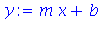

But sometimes the whole expression/eval combination is just too clunky. An alternative is to create a function.
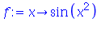
The above says that f is a rule to map a value to the sine of the square of that value. The rule can be applied to numbers, variables, or expressions, with no need to use eval.

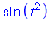
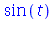
If you have an expression and want to make it a function, use:
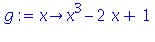
Conversely, g(x) is equivalent to the expression p defined earlier. You can easily go back and forth and use whichever is most convenient.
Limits
You can take limits of expressions.
| > |
limit( 1/x, x=infinity ); |

| > |
limit( x*sin(1/x), x=0 ); |

| > |
limit( (sin(t+h)-sin(t))/h, h=0 ); |
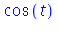
Differentiation
Taking one or more derivatives of a function is easy.
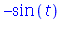
If you have a function, you can convert it to an expression first.
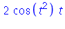
Alternatively, you can use D. The result is another function representing the derivative. This makes it easy to find values at different arguments.
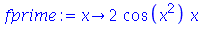
Here are two ways to find a derivative at a point.
| > |
eval( diff(f(x),x), x=1 ); |
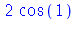
The derivative of an undefined symbol is a purely symbolic result. Observe the difference in these next two statements:


You must make the dependence on the independent variable explicitly clear.
Integration
You can do indefinite or definite integration. In the indefinite case, Maple does not add the integration constant!
| > |
int( sin(theta), theta ); |
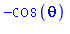
| > |
int( sin(theta), theta=0..Pi/2 ); |

If you capitalize Int, Maple just spits back the integral without trying to evaluate it. Then, you can use value to ask it to find the integral. This is a useful habit, to make sure you are getting the integral you think you asked for.
| > |
Int( sin(theta), t=0..Pi/2 ); # oops! |
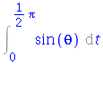
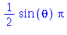
| > |
Int( sin(theta), theta=0..Pi/2 ); |
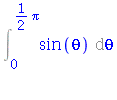
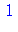
Sometimes Maple is actually wrong.
| > |
int( sin(n*theta), theta ); |
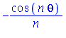
What are we to make of that last result if n=0? You could answer that the original problem is very easy in that case. But here is another one where it is not.
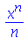
As you know, most integrals are hard. Many are impossible. If Maple can't get the answer, it just returns the unevaluated form.
| > |
int( sin(cos(theta)), theta ); |
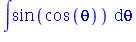